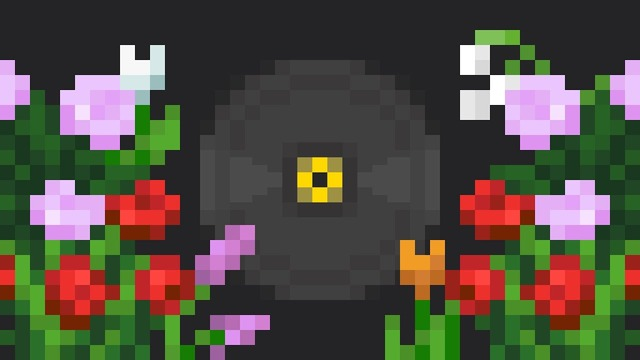
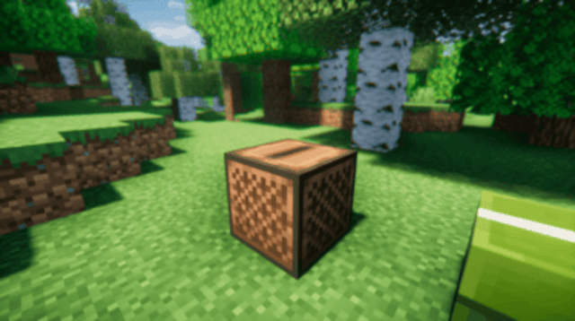

Minecraft CDs

Sound of Music Achievement
Make the Meadows come alive with the sound of music from a jukebox.

Music to My Ears Achievement
Play a music disc in a Jukebox.
Make the Meadows come alive with the sound of music from a jukebox.
Play a music disc in a Jukebox.